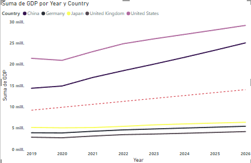
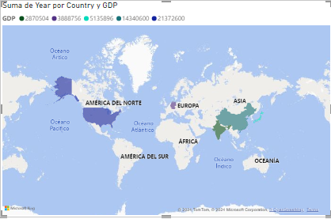

Tableau and Power BI Journey
Journey Overview
Tableau
GET STARTED WITH TABLEAU
CREATE VIEWS AND DASHBOARDS
CONNECT TO AND TRANSFORM DATA
EXPLORE AN ANALYZE DATA
PUBLISH AND MANAGE CONTENT
TABLEAU DESKTOP BASIC
TABLEAU DESKTOP INTERMEDIATE
TABLEAU DESKTOP ADVANCED
Description course "Get Started With Tableau"
Describe the basics of data literacy. Describe how to read and interpret data in different chart types. Demonstrate an understanding of Tableau terminology. Describe the flow of analysis in Tableau Desktop. Describe key areas of the Tableau Desktop workspace. Describe when to choose a specific graph/chart type based on a business scenario and audience. Understand the use cases for each Tableau product. Use Tableau Pulse's automated, AI-enhanced analytics to see, understand, and act on your data.
Description course "Create Views and Dashboards"
Connect to your data and edit a data source. Edit metadata and group fields in Tableau Desktop, Tableau Cloud, and Tableau Server. Connect to, clean, and output your data for analysis in Tableau Desktop and Tableau Server or Tableau Cloud. Apply cleaning operations, create calculations, and edit incorrect field values singly or in groups to address data issues. Build data prep flows, and reshape data using pivots and aggregations. Validate your data preparation work in Tableau Prep Builder and in Tableau Desktop. Configure and use Tableau Prep Builder's data sampling functionality. Design a complex flow, end-to-end, applying the range of cleaning techniques available, for a real-world scenario.
Description course "Connect to and Transform Data"
This course teaches how to connect to data sources and edit them, manage metadata, and group fields in Tableau Desktop, Tableau Cloud, and Tableau Server. It covers essential data preparation techniques, including cleaning operations, creating calculations, and correcting data issues both individually and in groups. The course also guides learners through building data prep flows, reshaping data using pivots and aggregations, and validating their work in Tableau Prep Builder and Tableau Desktop. Additionally, it explains how to configure and use Tableau Prep Builder's data sampling functionality. Finally, the course demonstrates how to design complex, end-to-end data flows, applying a comprehensive range of cleaning techniques for real-world scenarios.
Description course "Explore and Analyze Data"
This course teaches how to create basic calculations, including arithmetic calculations, custom aggregations, and ratios. It covers the creation of quick table calculations as well as custom table calculations. The course also guides learners on how to summarize, model, and customize data using the Analytics feature. Additionally, it explains how to create parameters to enable interactivity within Tableau.
Description course "Publish and Manage Content"
This course teaches how to describe Tableau roles and licenses, as well as the best practices for managing data to optimize performance. It covers the governance policies for publishing and managing content on Tableau Server and sites. The course also includes instructions on how to publish content to Tableau Server and Tableau Cloud, schedule data refreshes and flows, and manage and interact with published workbooks.
Description course "Tableau Desktop Basic"
This course teaches how to connect to your data, edit and save a data source, and understand Tableau terminology. It covers the use of Tableau's interface to create compelling visualizations effectively. You will learn to create basic calculations, including arithmetic calculations, custom aggregations, and quick table calculations. The course also covers how to represent your data using various visualization types, such as cross-tabs, geographic maps, heat maps, tree maps, pie and bar charts, dual-axis charts, combined charts with different mark types, highlight tables, and scatter plots. Finally, the course will guide you in generating dashboards to share your visualizations.
Description course "Tableau Desktop Intermediate"
This course teaches how to create advanced visualizations and chart types, build complex calculations for data manipulation, and use statistical techniques for data analysis. It covers the use of parameters and input controls to give users control over specific values, implementing advanced geographic mapping techniques, and creating spatial visualizations for non-geographic data using custom geocoding and images. Additionally, the course covers combining data sources using data blending, improving performance with extracts, and creating better dashboards with techniques for guided analysis, interactive dashboard design, and best practices in visual analysis.
Description course "Tableau Desktop Advanced"
This course teaches how to perform advanced calculations to extract additional insights from your data, incorporate advanced chart types into your analysis, and apply advanced dashboard creation techniques. It covers the combined use of calculations, parameters, and table calculations, and demonstrates how to apply Tableau techniques to solve practical use cases commonly encountered by corporate users. The course also includes guidance on formatting visualizations and dashboards for maximum impact and explores real-world business examples.
Power Bi
DECISION SUPPORT SYSTEMS
EXCEL POWER TOOLS FOR DATA ANALYSIS
Description course "Decision Support Systems"
This course offers a comprehensive exploration of Excel, covering foundational skills such as navigating cells, formatting, and creating formulas, progressing to advanced techniques like data validation, conditional formatting, and the creation of dynamic charts and PivotTables. The course also introduces VBA (Visual Basic for Applications) with a focus on macro recording, object properties, and module organization. Students will learn to create variables, conditional structures, and loops, and apply them to real-world business cases. Additionally, the course delves into database integration, including SQL queries, JOIN operations, and database functions within Excel. Power BI is utilized for data cleaning and to visualize information, enabling students to create interactive reports and dashboards. Furthermore, the course includes reading and integrating information from Access databases, providing a holistic approach to data management and analysis. Practical assignments, exams, and a final project challenge students to apply all acquired skills in a comprehensive Excel, VBA, and Power BI simulation.
Description course "Excel Power Tools for Data Analysis"
This course, covers essential skills for handling data in Excel, Power Pivot, and Power BI. The course begins with importing and transforming data using Power Query, managing large datasets with Power Pivot, and creating interactive reports with Power BI. Starting with importing and combining data from various sources, the course then focuses on transforming data, including pivoting and grouping operations. The Data Model in Excel is explored to manage extensive data and create complex visualizations. The course concludes with a transition to Power BI, applying Excel skills to build dynamic dashboards and share them with others. The course includes a mix of videos, readings, and quizzes to reinforce learning.
Learning Journey in Tableau Desktop
Throughout my learning experience, I completed a series of Tableau Desktop courses designed to take me from basic to advanced mastery. These courses provided me with a strong foundation in data analysis and visualization.
**Beginner Course:** I started with the fundamentals, learning how to connect and customize data sources, create filters and groups, and work with measures and dimensions. This course also covered basic data visualization techniques and introduced me to creating simple dashboards.
**Intermediate Course:** As I progressed, I focused on more complex data manipulation, including working with multiple data sources, advanced joins, and blending. I also enhanced my skills in mapping data, using more sophisticated visualization techniques, and creating interactive dashboards that effectively communicate insights.
**Advanced Course:** In the advanced course, I refined my expertise in Tableau, focusing on time series analysis, predictive modeling, and optimizing dashboards for a better user experience. I learned to use advanced calculations, level of detail (LOD) expressions, and complex data visualizations to tackle more sophisticated data problems and deliver high-impact visual solutions.
Tableau Analyst Course
After completing the Tableau Desktop series, I continued my journey by completing the full Tableau Analyst certification, consisting of four additional courses. These courses have equipped me with comprehensive skills to connect, transform, explore, analyze, and publish data in Tableau, allowing me to fully leverage this powerful tool.
**Connect to and Transform Data:** In this course, I learned how to connect and customize data sources, work with multiple data sources, and use Tableau Prep Builder to clean, shape, and output data. This provided a strong foundation in data preparation, ensuring I can effectively handle and transform data for analysis.
**Create Views and Dashboards:** I focused on organizing data, creating filters, building common views, mapping data, and creating dashboards and stories. I also learned about visual analytics best practices, essential for creating impactful and insightful visualizations.
**Explore and Analyze Data:** This course delved into creating calculated fields, level of detail (LOD) calculations, applying table calculations, and using analytics tools within Tableau. It enhanced my ability to perform in-depth data analysis and uncover hidden insights within datasets.
**Publish and Manage Content:** Finally, I learned how to publish content, interact with published content, analyze data with Tableau Pulse, and manage and audit content effectively. This course was crucial for understanding how to share insights and manage data assets in a collaborative environment.
Learning Journey in Power BI
My journey with Power BI began with understanding how to connect and transform data from various sources, using Power Query to clean and prepare the data. As I progressed, I learned how to handle large datasets by utilizing Excel's Data Model, allowing me to surpass the limitations of traditional spreadsheets.
Later, I delved into creating dynamic visualizations and interactive dashboards using Power BI. Here, I put into practice the skills acquired in Power Query, M, and DAX, designing reports that were not only visually appealing but also highly functional and useful for data-driven decision-making.
This journey has allowed me to master the full suite of Microsoft's data analysis tools, giving me the capability to turn data into actionable insights, whether through Excel or Power BI, and effectively share these insights with others.
Developed Examples
Throughout my learning journey, I have developed a series of projects and dashboards that demonstrate my skills in Tableau and Power BI. These examples include geographic data visualization, trend analysis over time, and the creation of interactive dashboards that allow users to explore data intuitively.
2014 Sochi Olympics Games Results
In this dashboard, several advanced Tableau techniques were utilized to create an interactive and insightful data visualization experience. Data Blending was employed to combine data from multiple sources, allowing for a comprehensive analysis within a single view. Calculated Fields were used to derive new insights by performing complex calculations directly within the data. To enhance the visual storytelling, Dual-Axis Charts were implemented, enabling the comparison of different measures on the same chart. Interactive Filters provided users with the ability to explore the data dynamically, while Geospatial Mapping was used to visualize information in a geographic context. Additionally, Parameters for Dynamic Control were included, allowing users to adjust views and explore different scenarios with ease.
Why are table sales in the East region not generating profits?
This presentation was created to answer the question "Why are table sales in the East region not generating profits?". I found out was that table sales in the East region are not generating profits because table sales have large discounts. In this Tableau story, several techniques were utilized to explore and answer this question. Although it is not a dashboard, the story format in Tableau allowed for a sequential exploration of data. Bar Charts were used to compare different categories or segments, while Interactive Filters enabled dynamic exploration of the data. Additionally, Calculated Fields were employed to perform in-depth analysis, and Parameters provided dynamic control, allowing users to switch views and explore different scenarios.
Profit Analysis
This dashboard included several advanced Tableau features to provide comprehensive insights. Line Charts were used alongside Bullet Graphs to track performance against targets, taking into account checkmarks for different metrics. Additionally, a Hyperlink Button was integrated, allowing users to navigate to another dashboard for further analysis. Dual-Axis Charts were also employed for comparing measures, and Calculated Fields were used to derive new insights.
Trend chart
This analysis was conducted using a Trend Chart to make predictions based on the Simple Smoothing method. The trend was displayed within a Tableau dashboard to visualize future projections and trends in the data. This approach provided a clear view of potential future outcomes, helping to inform decision-making.
World wide
This dashboard utilized several Tableau techniques to present data effectively. Sparklines were used to show trends over time within compact spaces, providing a clear overview of the data's direction. Additionally, Heat Maps and Hierarchies were employed to organize and explore the data, with Interactive Filters allowing users to dynamically segment the information. The results were consolidated in a Dashboard for a comprehensive and interactive user experience.
Data cleaning
In this video, the focus was on the crucial steps of Data Preparation and Data Cleaning for a dataset containing house prices in Bogotá for 2024, intended for a future personalized GPT project. Several Tableau techniques were employed, including Data Transformation to adjust the data structure as needed. Specific tasks included Removing Duplicates to eliminate redundant entries and Handling Null Values to address any missing data. Additionally, operations like Splitting and Merging Fields were performed to reformat and optimize the data for subsequent analysis.
As shown in the video, a Calculated Field was created using a formula to correct the price format issues. Originally, prices that should have been in millions were misrepresented; for example, 23 was displayed instead of 230 million pesos, and values in billions of pesos (e.g., 2,300,000,000) appeared incorrectly as 2.3. The calculated field adjusted these values to reflect the correct monetary amounts, ensuring that the data was accurately represented for analysis.
Next Steps
Power BI Workshop Explanation
Project Overview
In this Power BI workshop, the project focused on analyzing a dataset containing global GDP (Gross Domestic Product) data and sales data for various products. The GDP data was sourced from a comprehensive dataset of global economic indicators, specifically focusing on the GDP values for different countries across several years. The sales data, on the other hand, was collected from a CSV file containing detailed records of sales transactions across different quarters in 2021.
The goal of the project was to explore, transform, and visualize this data to provide insights into economic trends and sales performance. For the GDP data, the objective was to highlight the top 5 countries with the highest GDP for the year 2019 and to observe trends over subsequent years. For the sales data, the aim was to clean and prepare the data for analysis, enabling us to track sales trends, product performance, and other key metrics.
1. Connecting and Visualizing Data
In this Power BI workshop, I started by connecting to my dataset and setting up the correct data types for each column using the Table.TransformColumnTypes command. For example, I defined the "Country" column as type text, the "Year" column as Int64.Type (64-bit integer), and the "GDP" column as type any, which allows it to accept any data type. This step was crucial to ensure that my data was properly understood and processed by Power BI.
I then created a visualization that displayed the GDP of the top 5 countries for the year 2019. To do this, I filtered the data to focus on these specific countries and years, enabling a targeted analysis of the global economic leaders.
 2. Working with Data
Next, I loaded a CSV file ("2021-Q1-Sales.csv") using the Csv.Document function. This function allowed me to specify important parameters such as the file path, the field delimiter (comma), the number of columns (6), the text encoding (Windows-1252), and the quote style (QuoteStyle.None), which indicated that there were no text-enclosing quotes in the data.
I then promoted the first rows of the CSV file as column headers using the Table.PromoteHeaders function, setting PromoteAllScalars to true. This ensured that all scalar values were appropriately treated as headers.
To maintain data consistency, I transformed the column types. For instance, "Order ID" and "Quantity Ordered" were set as 64-bit integers (Int64.Type), while "Product," "Order Date," and "Purchase Address" were set as text (type text). "Price Each" was also set as a 64-bit integer (Int64.Type).
I conducted a data quality check on several columns, including "Order ID," "Product," "Quantity Ordered," "Price Each," "Order Date," and "Purchase Address." The check revealed that 99% of the data was valid, with only a few missing entries in each column.
After ensuring data quality, I sorted the table in ascending order and grouped the data by quarters, naming the queries appropriately (e.g., "Juan_Consultas_Sales_Q1234"). This step helped in organizing and segmenting the data effectively.
I then combined the data from all quarters into a single table using the append function, which allowed for a comprehensive analysis of the entire year's sales data.
To further refine the data, I extracted cities from the "Purchase Address" column by selecting text between delimiters (commas). I also reformatted the columns, placing order-related information on the left and product details on the right, enhancing the clarity of the data.
After cleaning and transforming the data, I created several visualizations. These included bar charts that showed GDP over different years, as well as a line chart and a choropleth map highlighting GDP trends from 2019 to 2026 for the top 5 countries. I applied formatting options like bolding axis labels and adding trend lines to better interpret the data.
And now?
I am excited to continue developing my skills in data analysis and visualization, exploring new ways to use Tableau and Power BI to solve complex problems and create value through data interpretation. My next goal is to keep learning and applying these tools to more challenging and large-scale projects.